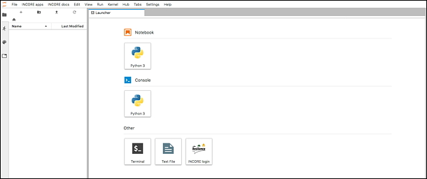
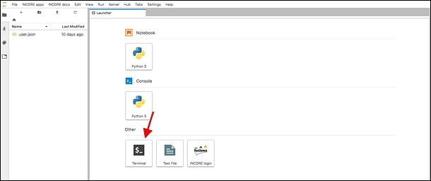
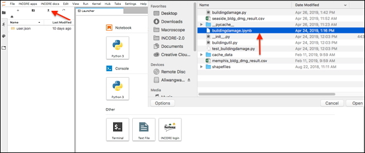
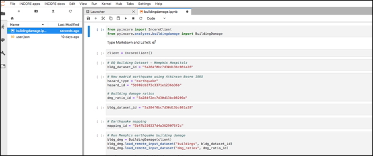
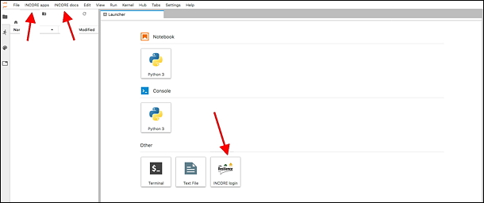
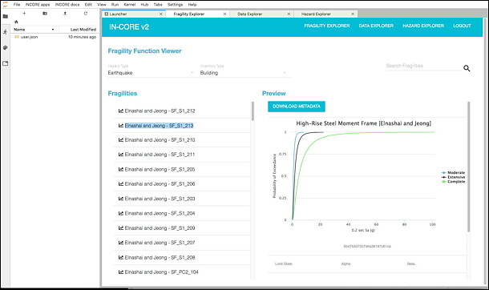

11. IN-CORE Lab¶

A user can run and edit Jupyter Notebooks interactively in NCSA’s IN-CORE Lab running at https://incore-lab.ncsa.illinois.edu. The IN-CORE Lab is a customized Jupyter Lab with pyIncore installed on the server running Linux OS.
Login to IN-CORE Lab with your IN-CORE account info.

11.1. Authentication¶
Create a credential file with IN-CORE username/password (same information you used to login to IN-CORE Lab) in order to use IN-CORE services. This is similar to the local authentication step except the authentication file .incorepw is being created on the server:
Open the terminal on IN-CORE lab Launcher page (arrow):

In the terminal, make sure you are in your HOME directory. Type
pwdto see the current path andcd ~to get into your home directory (/home/<username>).Create a hidden (therefore dot prefix) folder using
mkdir .incorecommand.

Create a hidden credential file in the folder you just created (
cd .incorefollowed bynano .incorepw) and type IN-CORE username and password using Nano, the Linux command-line text editor. nano text editor. Write your username in the first line and the password in the second.Save the file with
Ctrl+OandEntercommandsClose the text editor and return to your shell with
Ctrl+Xcommand
A chain of terminal commands 2) through 4) above.
pwd
cd ~
($/home/<username>)
mkdir .incore
cd .incore
nano .incorepw
11.2. Running Notebook in the Lab¶
In Running Notebook locally section we described how to run Building damage Notebook locally. The following section focuses on step-by-step instructions of running Notebooks on the IN-CORE Lab.
Create a credential file with IN-CORE username/password if you haven’t done it yet. See [IN-CORE Lab](incore_lab.md#IN-CORE Lab) section.
Upload the Building Damage Analysis notebook from your local machine to IN-CORE lab by clicking the
Uploadicon in the left panel and select buildingdamage.ipybn.

The Notebook shows up in the left panel after a successful upload.
Double click to open the Notebook in the main area and run it. Instructions on how to run a Building Damage Analysis, please refer to previous section Running Notebook locally.

11.3. Accessing IN-CORE Web Tools¶
This section shows how to access IN-CORE Web Tools on IN-CORE Lab. The IN-CORE Lab is a customized Jupyter Lab with INCORE Login button in the main window and two IN-CORE-related menus, INCORE apps and INCORE docs.

Click on
INCORE Loginbutton in the main window. For login use the same username and password.

This login process generates a file named user.json. It appears in the File list manager on the left side. The file contains an authentication token required for development of new analyses using IN-CORE’s Application programming interface (API).


Fragility, Data and Hazard Explorers under
INCORE appsmenu become enabled after pressingLOGINbutton AND reloading the current page in the browser. NOTE: A user must reload the whole Jupyter dashboard page (above) using theReloadbutton of the browser, not the Refresh File List (part of Jupyter’s file navigation) otherwise a following Warning appears:

The IN-CORE Web Tools Viewers become part of INCORE Lab as shown below for Fragility viewer.

11.4. IN-CORE documentation¶
For ease of access - documentation is easily accessible from IN-CORE Lab.
The second IN-CORE menu, INCORE docs allows user to see pyIncore documentation and API endpoints definitions for accessing Fragility, Data and Hazard server(s).